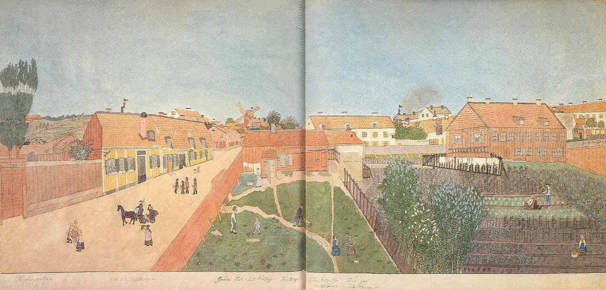

|
FÖRSOMMAR VID HÖGBERGSGATAN Den stora akvarellen på grovt, ej skarvat papper är uppdelad på tre scenerier: ett gatuparti, en grästäckt gård och en större trädgård. På gatan kommer två s k trädgårdskullor bärande en slags bår med friskt utvecklade krukblomster, möjligen en beställning till en kyrka eller en festlokal. Strax bakom kommer Josabeth i grön klänning och grå kappa och saluteras av doktor Levin i sin läkarvagn. Fyra sotare pratar och iakttas nätt och jämnt av en brokigt hund på gatan. De observeras också av tre inneboende damer i huset Högbergsgatan 53. Stora ingången för till en butik skyltad med tobak och ljus. Det rosafärgade huset på andra sidan Timmermansgatan rymmer en garnbod, och längre bort står en gammal fotkvarn kallad Brinckan (efter brännvinsbrännare Måns Brinck). Den revs 1875. På gården hängs tvätt utanför gamla brygghuset. Gerber och Calle gräver och sopar, medan Herr Kniberg kör bort en skottkärra med skräp. |
Den Blårutiga håller lille William på armen och han erbjuds ett litet äpple av Den Grå. Trädgårdslanden sköts av trädgårdsmästare och två kullor, den ena ansar kål och den andra morötter. Bondbönor och rosenbönor står i raka led. Blålila och vita syrener blommar högt. Detta är en av konstnärinnans mest bearbetade kompositioner. Gårdens gräsmatta är i en grön ton, varöver sedan grässtrån streckats ned med grön bläckpenna. I detta heltäckande färgskikt har hon vidare stuckit små gropar i papperet med vass pennkniv. I den har hon penslat klargul färg för att skapa maskrosblommor vars blad även tillfogats ovanpå. Häggblomstren bakom brygghuset har också åstadkommits genom djupa skrapningar med pennkniven. Samtliga fönster och andra blanka stoffer har fernissats med äggvita. |
